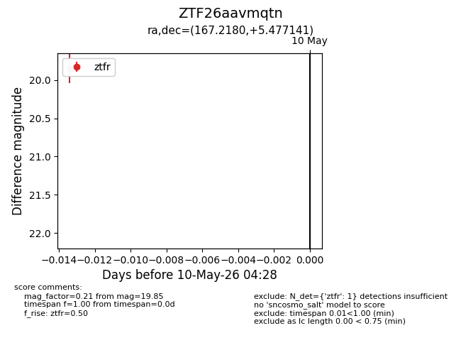
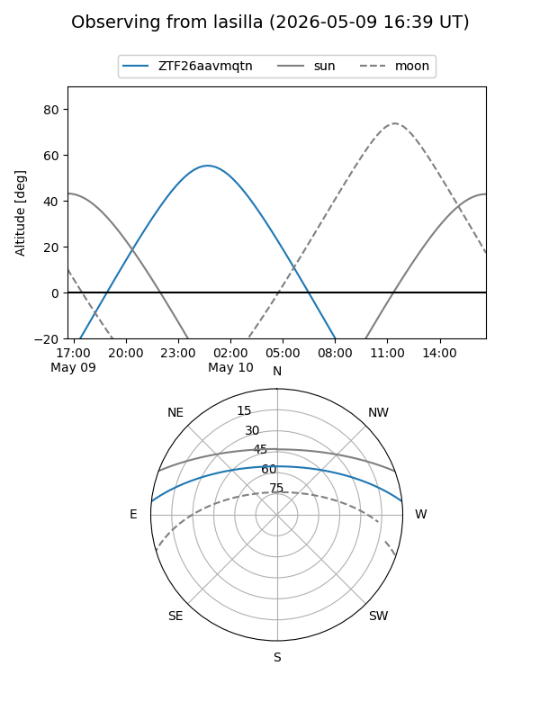
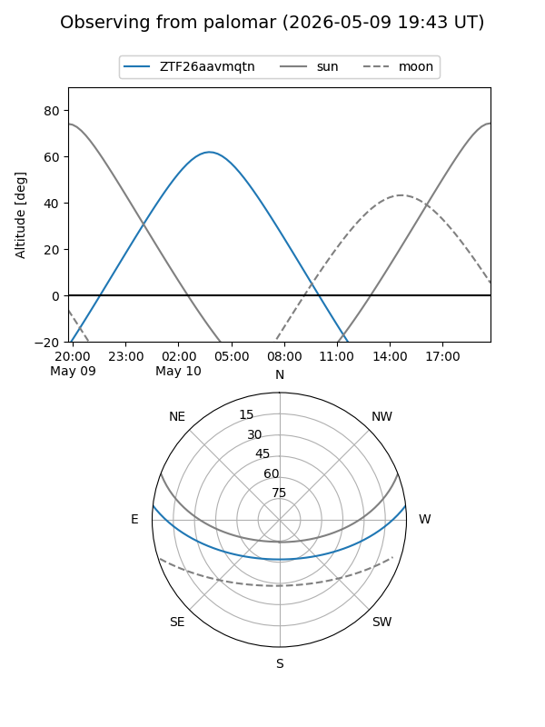

ZTF26aavmqtn
Target ZTF26aavmqtn at 2026-05-10 04:29
Aliases and brokers:
FINK: link
Lasair: link
ALeRCE: link
alt names
ZTF26aavmqtn (ztf,fink_ztf)
Coordinates:
equatorial (ra, dec) = 167.2180,+5.47714
equatorial (HMS+DMS) = 11:08:52.33,+05:28:37.71
galactic (l, b) = (249.9023,+57.37335)
Flags:
Photometry:
last ztfr=19.85
1 ztfr detections
Lightcurve

Visibility


Additional plots